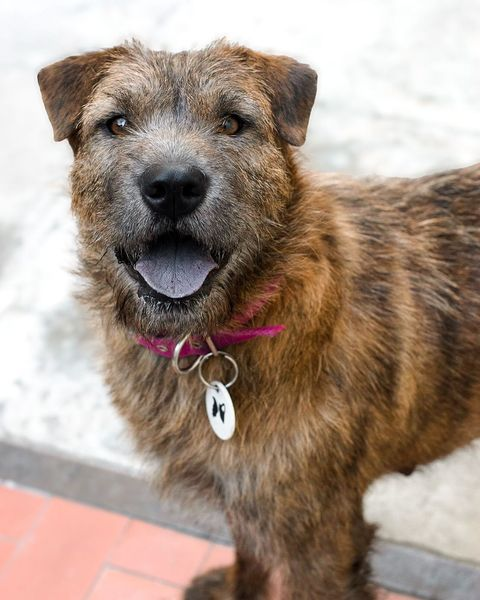
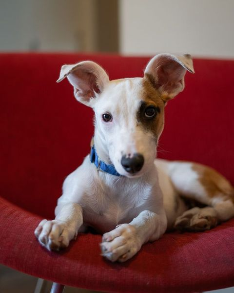
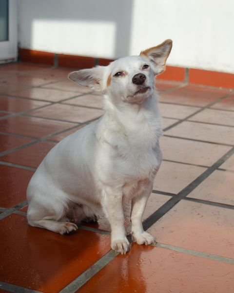
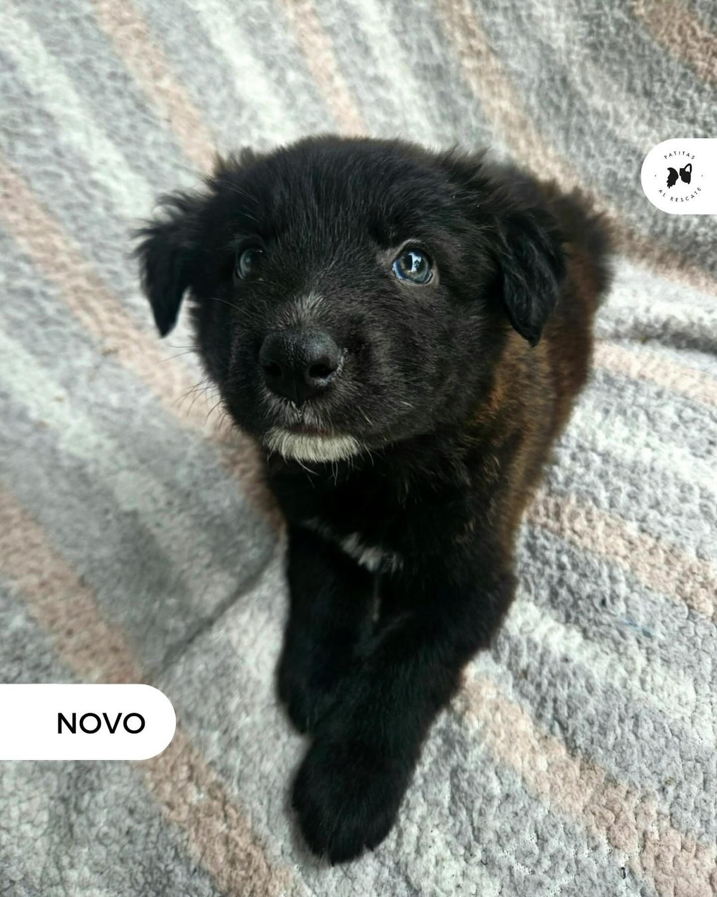
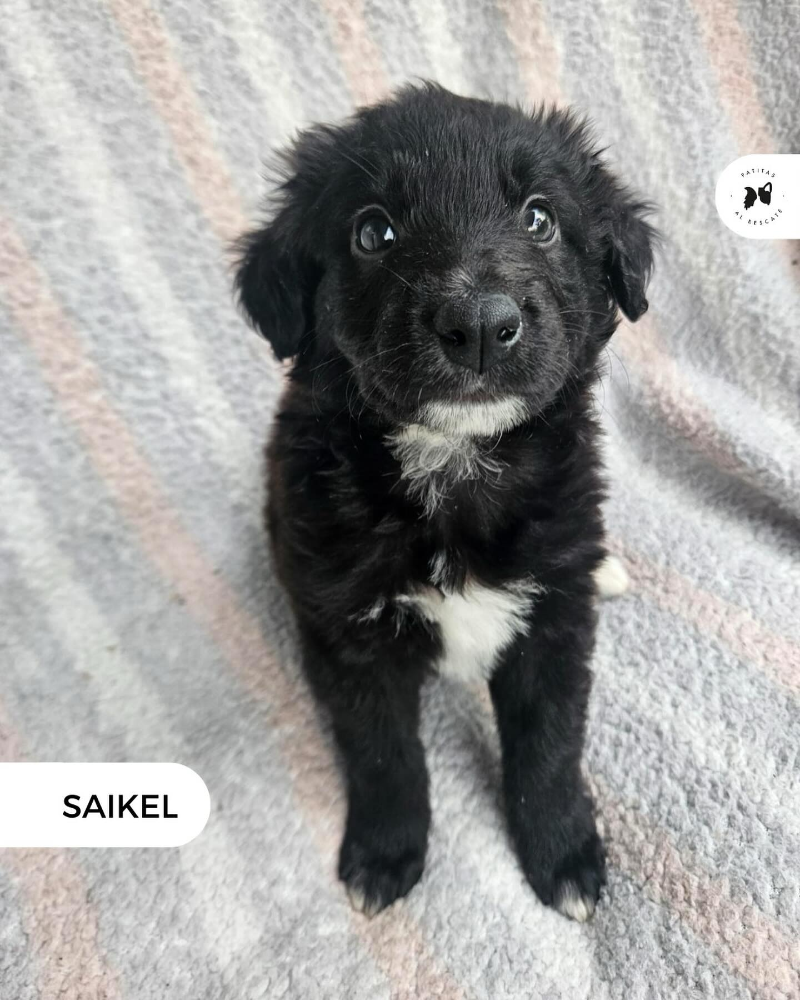
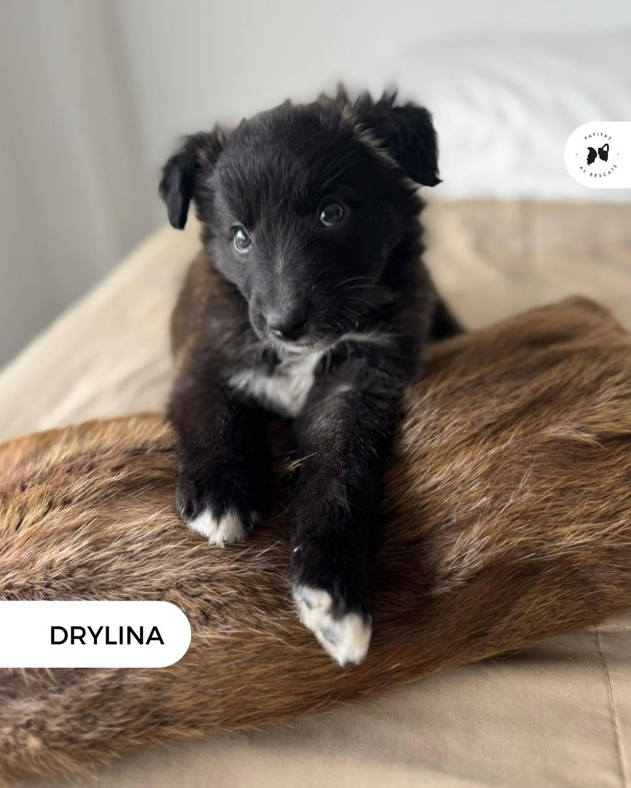
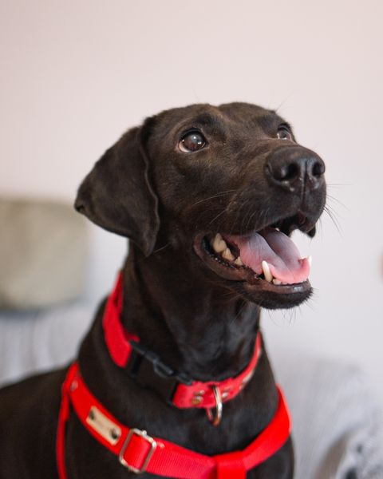
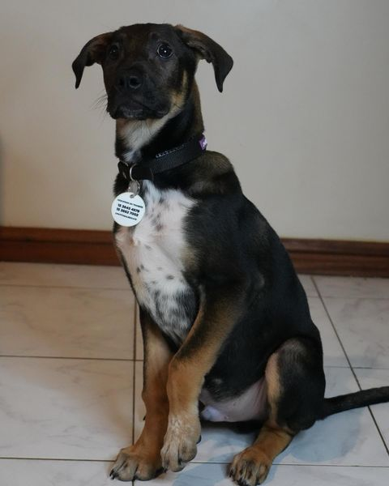
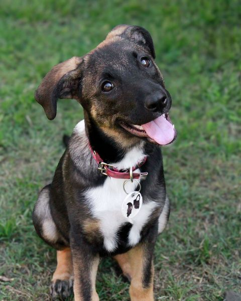

Jaune. Hembra de 2 años.
Patitas Al Rescate

Cuscus. Hembra de aproximadamenete 7 meses.
Patitas Al Rescate

Hebra. Hembra de aproximadamenete 3 años.
Patitas Al Rescate

Novo. Macho de aproximadamenete 2 meses y medio.
Patitas Al Rescate

Saikel. Macho de aproximadamenete 2 meses y medio.
Patitas Al Rescate

Drylina. Hembra de aproximadamenete 2 meses y medio.
Patitas Al Rescate

Ornella. Hembra de 5 años.
Patitas Al Rescate

Bronax. Macho de 4 meses.
Patitas Al Rescate

Asertal. Hembra de 4 meses.
Patitas Al Rescate